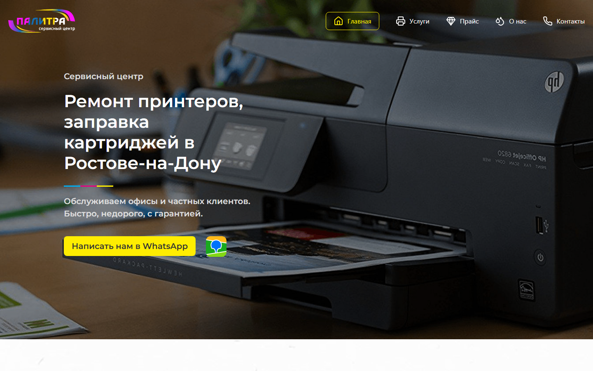
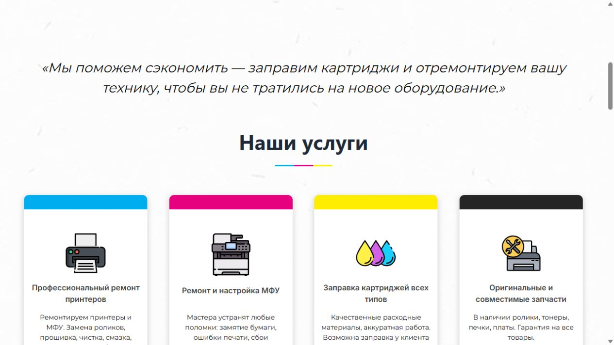
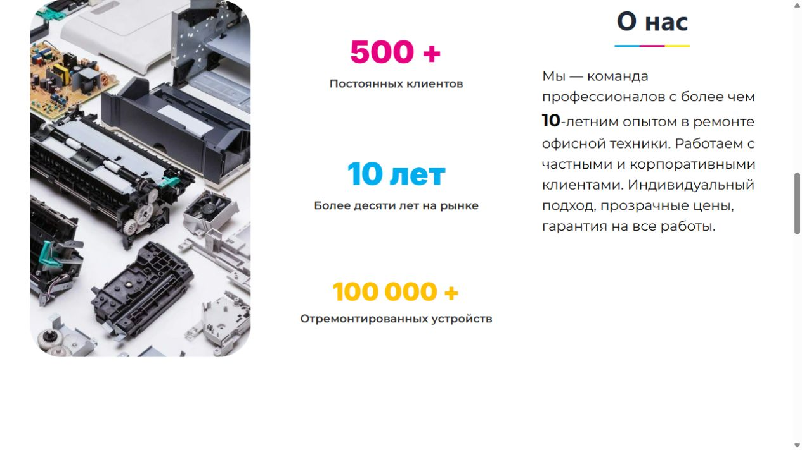

Сильный первый экран
Услуга, география, обещание и WhatsApp видны без прокрутки.
Сайт сервисного центра, который сразу отвечает: что ремонтируют, почему можно доверять и как связаться.

Для локального сервиса важны скорость и доверие. Посетитель должен за несколько секунд увидеть услугу, город, гарантию и прямой способ связи.
Открыть живой сайт ↗Услуга, география, обещание и WhatsApp видны без прокрутки.
Четыре направления разделены по конкретным задачам клиента.
Опыт, количество клиентов, отзывы и марки техники усиливают доверие.
Контакты, адрес, 2ГИС и форма заявки доступны в одном сценарии.
Контент выстроен по логике клиента: проблема, подходящая услуга, доказательства, связь.


Услуга и география понятны уже на первом экране.
Без лишнего поискаОпыт и реальные масштабы работы встроены в структуру.
Аргументы рядомWhatsApp и заявка не заставляют клиента регистрироваться.
Быстрый контакт